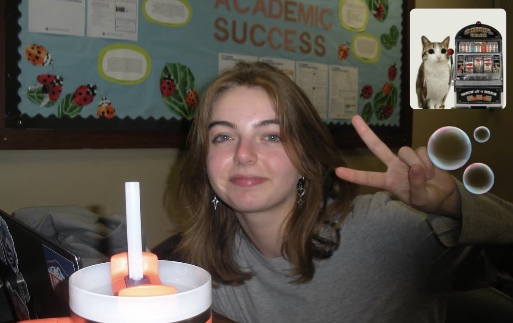
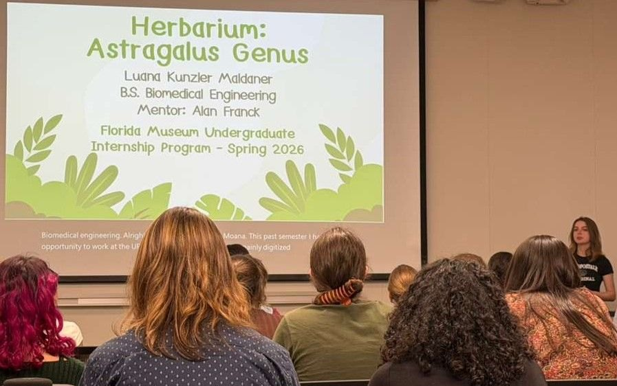
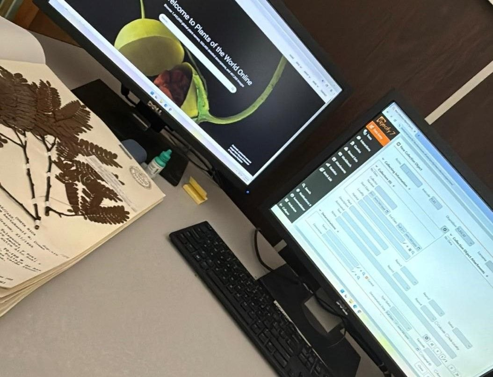
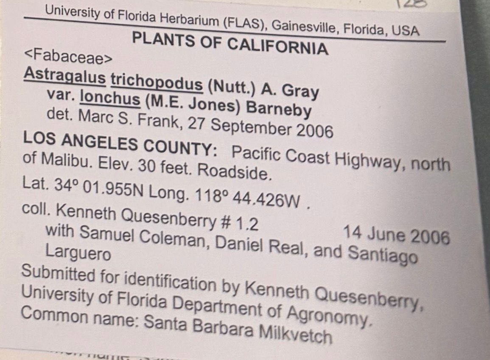
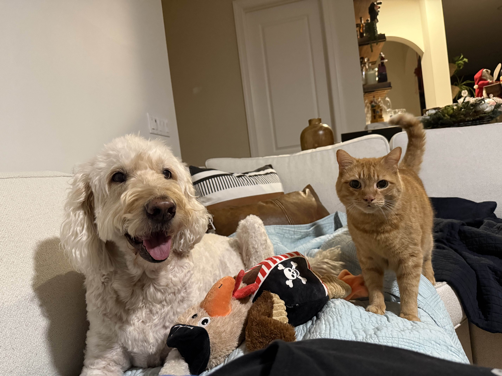
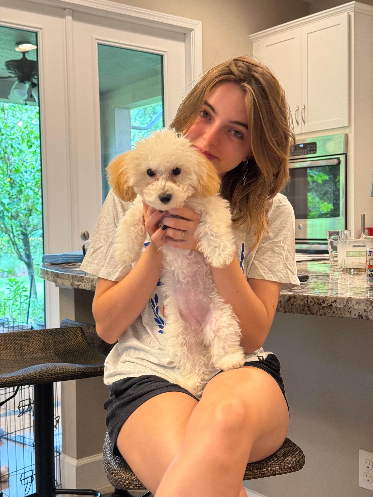
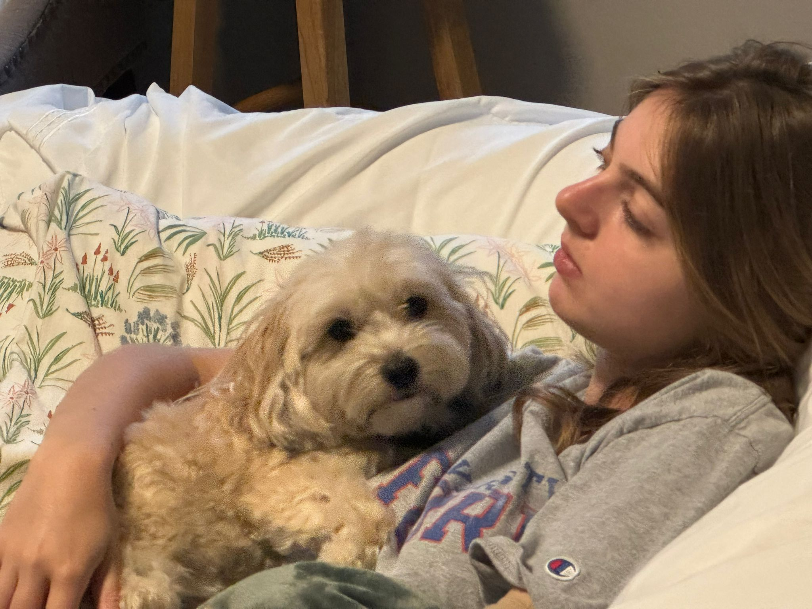
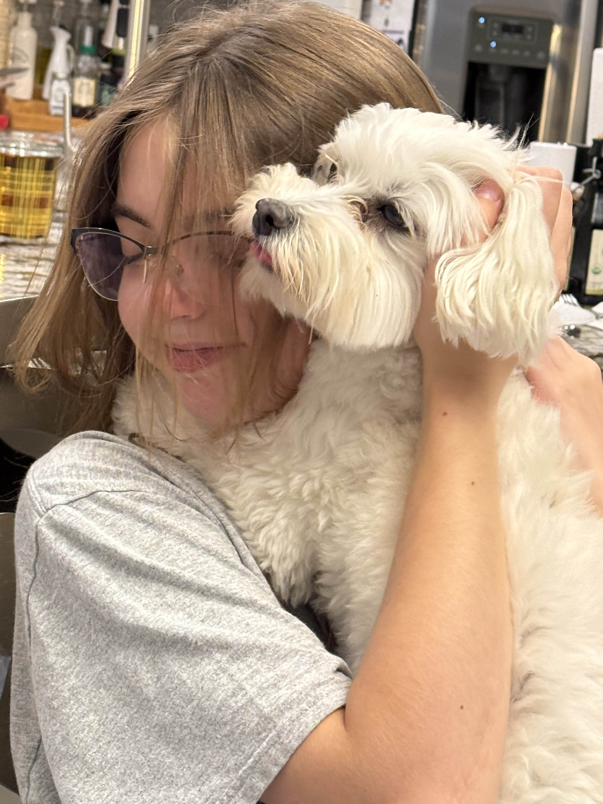

Luana Kunzler Maldaner
Data Science & Microbiology
About Me
Originally from Brazil, now in Florida studying Data Science and Microbiology. I interned at the Florida Museum of Natural History this past Spring.
Outside class: the gym, nature trails, or a coffee shop. Fluent in Portuguese and English, conversational Spanish, some German.
Experience
Work & Internships



Digitization Intern
Florida Museum of Natural History
- Digitized the herbarium’s Astragalus collection - roughly 350 specimens across 70 species
- Recorded taxonomic IDs, collectors, dates, localities, and habitat notes into the museum database
- Presented on Astragalus, the largest flowering plant genus, at the internship symposium




Pet Sitter & Business Owner
Parkland Pet Sitting
- Feeding, walking, and administering medications
- Built 10+ long-term client relationships
- Managed scheduling, communications, and business operations
Leadership
Campus & Community
Chief of Marketing
IEEE Signal Processing Society
Jun 2026 - Present
- Lead a student marketing team producing flyers and social content
- Automated flyer requests and email notifications
- Grew club outreach and visibility across campus
Data Science & Informatics
Hackathon Director
Apr 2026 - Present
- Secure funding and support from UF departments and campus partners
- Organize hackathon transportation logistics
- Manage event forms, approvals, and paperwork
Marketing Coordinator
Aug 2025 - Apr 2026
- Grew Instagram 1,100 - 2,300 followers; Discord 900 - 2,000 members
- Managed $5,200 in out-of-state hackathon travel
- Designed posters and graphics on a consistent brand
President
Astronomy Club
Aug 2024 - May 2025
- Revitalized club interest via social media
- Fundraised for new astronomy equipment
Tutoring Chair
Mu Alpha Theta
Aug 2023 - May 2025
- Matched 50+ students with tutors
- Organized weekly tutoring sessions
President
Marjory's Garden Club
Aug 2021 - May 2025
- 250+ volunteer hours in the school garden
- Led 40+ volunteers weekly
Featured
Projects
DashBlox - Code for Change
Game production platform unifying 3D assets, audio, docs, and project management.
Mosquito Tracker - GeoEMERGE
Tracks and reports mosquito populations to help prevent disease spread.
Liquid Lift - Outreach Design Comp.
Hands-on hydraulic arm activity teaching 3rd-5th graders Pascal's Law through a rescue-mission challenge.
DataFables - Hacklytics 2026
Turns any topic into an illustrated kids' storybook, with branching stories and narration in 10 languages.
Education
Academic Background
University of Florida
B.S. Data Science · B.S. Microbiology
AI Fundamentals, Biology 1-2, Chemistry 1-2, Calculus 1-3, Elementary Differential Equations, Health Disparities, Intro to Computational Math, Organic Chemistry 1, Physics 1, Programming Fundamentals 1, Programming with Data in R, Statistics, General Psychology
Marjory Stoneman Douglas High School
High School Diploma
AP Scholar with Honor & Distinction · Senior of Distinction in Science
Skills & Interests
Technology
Languages
Interests
Recognition
Awards & Certifications
HSF Scholar
Hispanic Scholarship Fund recipient
UF Gator Create Winner
Won 3 of 7 tracks in UF's innovation competition
CPR & AED Certified
American Heart Association certified